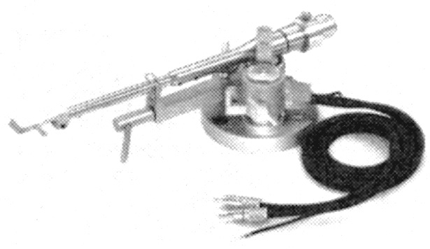

YSA-2

■価格 60,000円■型式 スタティックバランス型■全長 ■実行長 228�o■オーバー・ハング ■針圧範囲 ■アーム高さ調節 10�o ■アームベース穴■トラッキングエラー ■カートリッジ自重 4〜14g■線間容量■発売 1985年■販売終了 1989年頃■■備考 価格は1985年頃のもの付属機能：アームリフターオフセット角を0゜にした純直線型信号線往復抵抗0.15Ω
ヤマハのインデックスへ